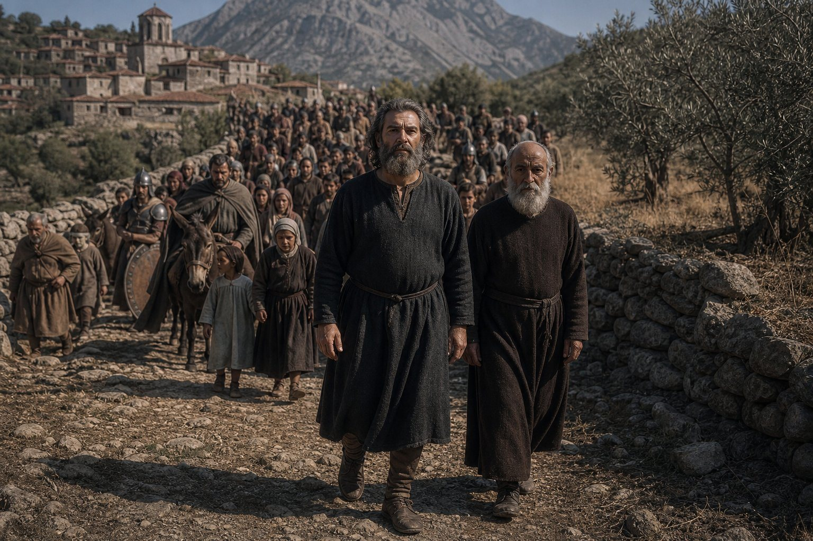
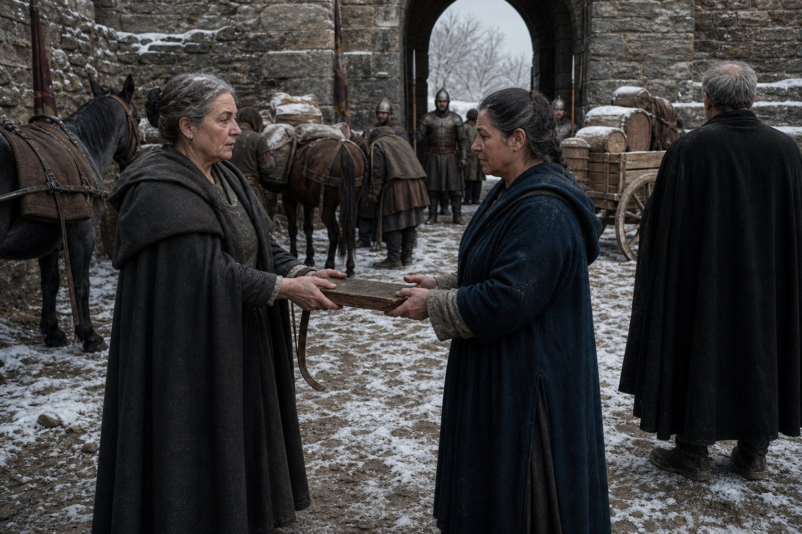
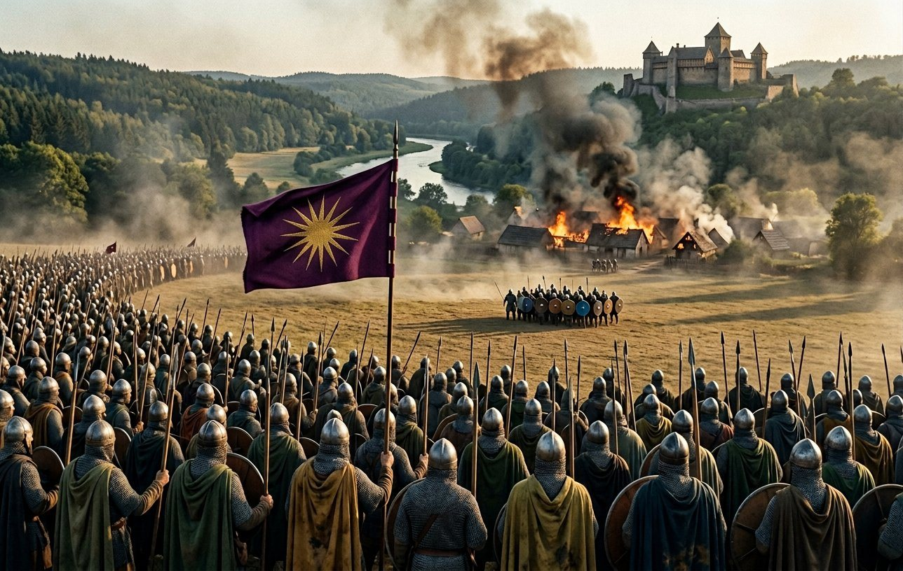
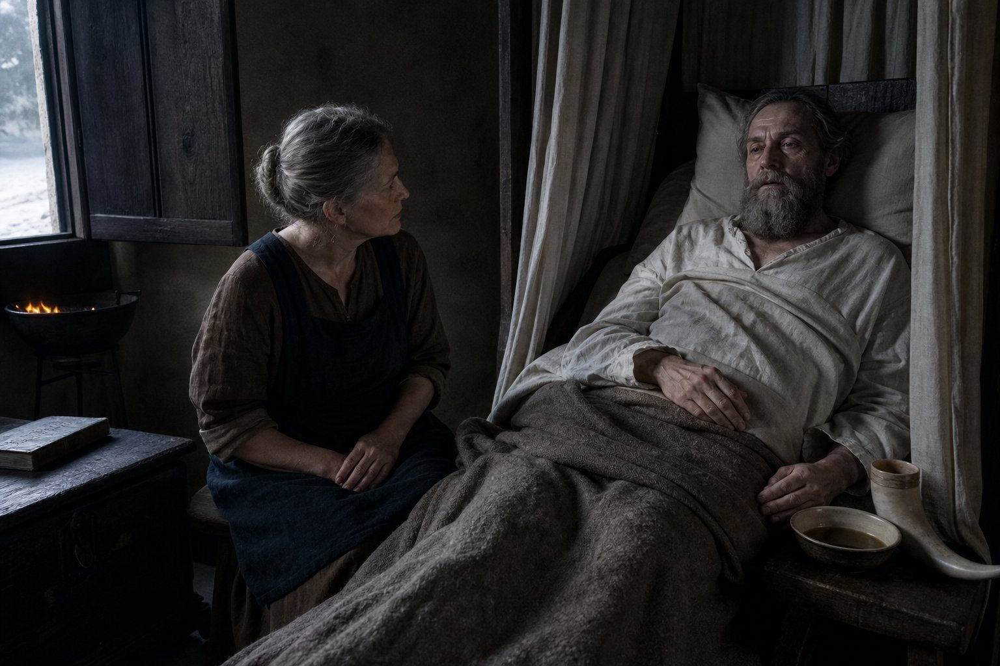
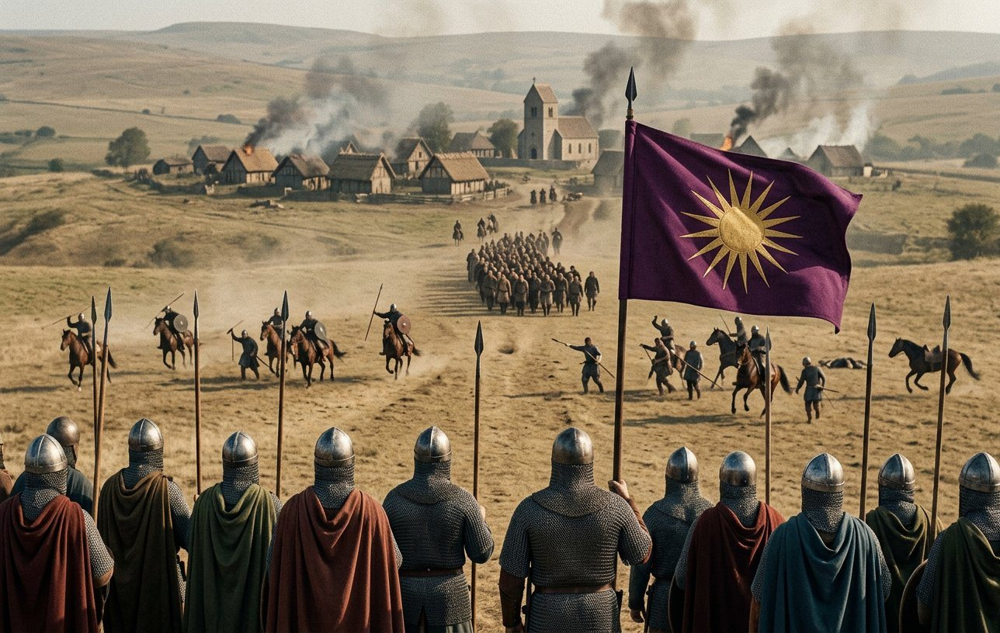
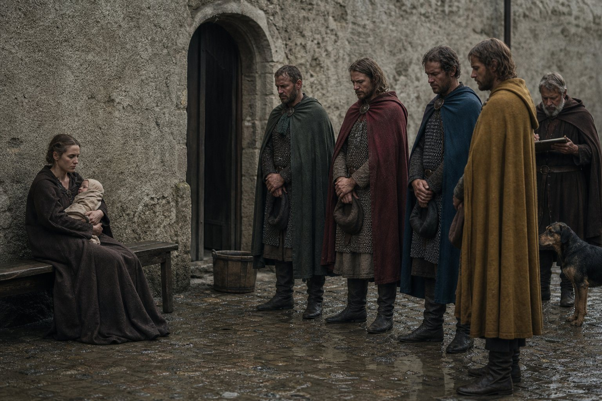
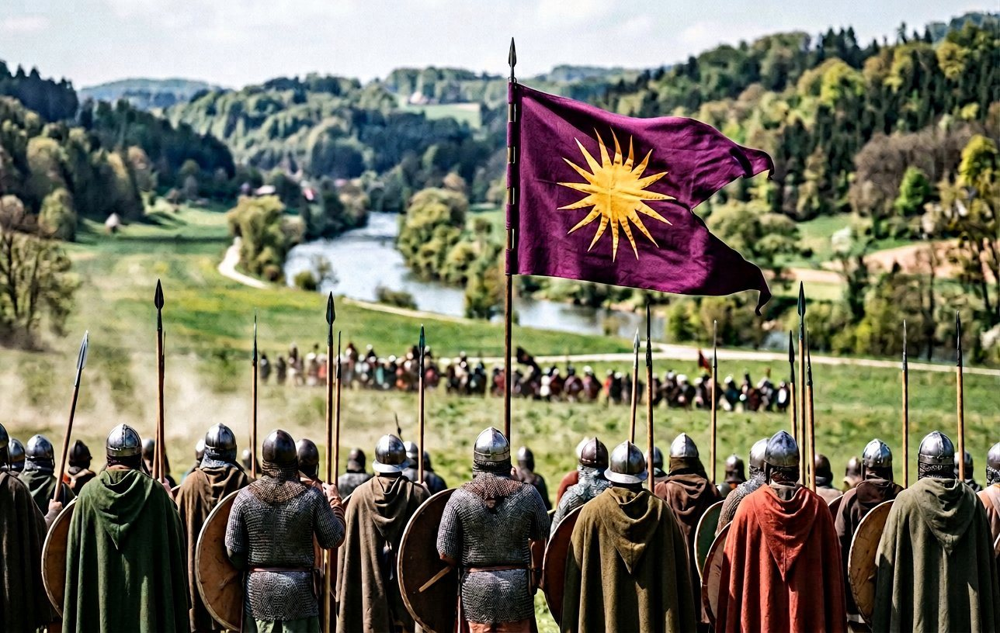
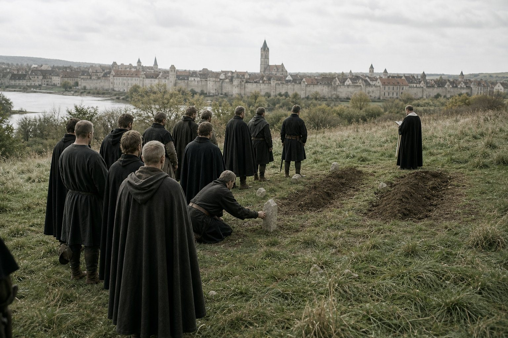
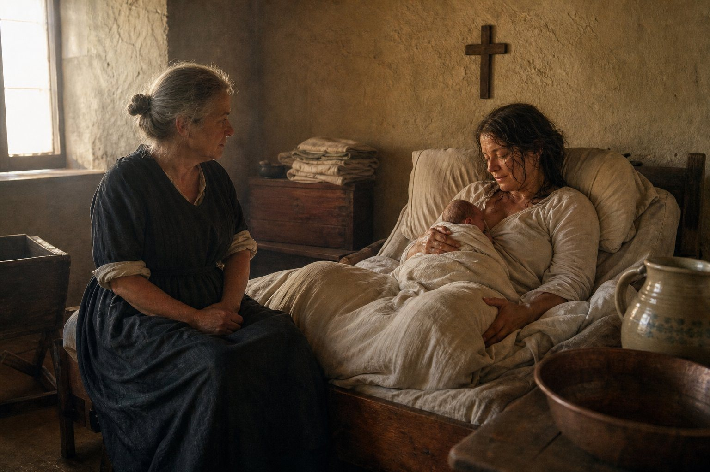
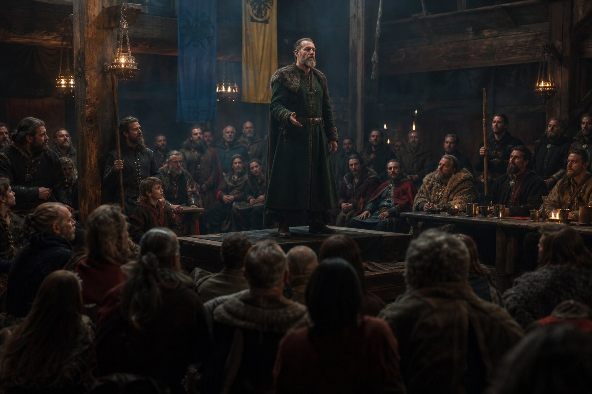

The road to Servia
We went out of Regensburg on the sixteenth day of the fifth month of 910 and we were on the road for seven months, and I am going to give the reader the shape of it in one paragraph because the shape is the point.
Servia is in Thessaly, under the mountains at the top of the Greek country, and it is a pilgrimage because a saint or a god or a grave is there and the record does not say which, and I did not ask. We went down through the Danube country and over the mountains and we came to it in the ninth month, and we were there two months, and we came home in the first month of 911 through the snow.
Nine of us went. Two of us came back who had not gone, and one who went did not come back, and I will come to all of that.
Antiphates was eight years and one month old and he rode the whole way. He had a mule of his own by then and a boy to hold it and a book, and he had begun, that summer, to keep a book of his own: a small one, waxed boards, in which he wrote down the places and what they had cost, because his father had said at Rottenburg that a man who cannot say what a thing cost does not know what he has.
I looked at it once, on the road, when he had left it on a stone. Twelve entries in a boy's Greek hand, and eight of them are prices.
The procession at Servia
He preached twice at Servia and led a religious procession, and the record gives the acts and no words, and I am not going to write a sermon for him twice in one volume.
The procession I will describe, because I was in it and because it is the strangest thing I have ever done in this company.

You must understand what a Hellenic procession is, and most readers will not, so here it is: it is not a parade of a god through a town. It is a walk. The people of the rite walk out of the town to a place, and stand, and somebody says the thing that is said, and they walk back. There are no images carried and no singing that a Latin would recognise as singing, and there is a great deal of standing about.
There were perhaps four hundred of us and two thirds of them were local, which is to say Greeks of the Thessalian country who had been doing this at that place for longer than anybody could say, and a third were ours: soldiers, servants, muleteers, a smith, an heir of Bavaria who was eight.
The King walked at the front with the priest of the place, and I want to put down what he looked like, because he had been a king for three years and this is the only page in the book where he is doing something that has nothing to do with a crown.
He walked bare-headed, in dark wool, with his hands at his sides and no sword, and he knew the responses. That is the thing nobody in the company expected. A man baptized at Vidin in 887 for reasons of contract, in a Greek rite that the Bavarian bishops had never heard of, and he stood in a procession in Thessaly and said the answers in the right places and did not look at anybody to see whether he was doing it right.
He had learned it as a boy, in Macedonia, before any of this. I have known him thirty-one years and I had never once thought about what he was before 866, and there was a boy of sixteen in that procession the whole way, and I saw him.
The two good omens
On the seventh day of the ninth month of 910, and again on the twelfth day of the tenth, the record gives a good omen.
The reader knows my position on this. The record does not say what an omen was in either case and this book does not invent one, and I have written a paragraph on the subject in the eighteenth chapter that I am not going to write again.
What I will do is the thing I did there, which is to give the dates and what happened on them, and let the reader do the arithmetic that the record does not do.
On the seventh day of the ninth month, at Servia, the record notes a good omen. On the twelfth day of the tenth month it notes another, and on that day the King made an excursion with Pramda.
That is all. An excursion, in the record's flat word, on the day of the second omen, with the woman who had run the government of everything since 879.
I have been a physician long enough to know what that entry is not. It is not a scandal; nobody in this company thought it was, and the record would have said so in the way the record says such things, which is by putting a name and a date and nothing else. What it is, I think, is a man of sixty walking out of a town in Thessaly for a day with the one person in the world who had been doing his paperwork for thirty years, on the day before the paperwork stopped.
Pramda
On the twentieth day of the eleventh month of 910 Pramda told the King that she was staying at Servia, and on the first day of the twelfth month she left the company.
I have written the leaving of three people in this book now and I have done it three ways, and this one I cannot do the way I did the others, so I am going to do it badly and get it on the page.
Pramda came out of the north with us in 879. She was in her twenties then. She was in the company thirty-one years, and for most of them she was the thing that made it work: the paymaster, the keeper of the chest, the woman who knew what every man on the roll was owed and where his mother lived, who wrote the letters that took eleven days and answered the next one before she had read it.
Chapter XVIII, which I wrote, called her the government of everything. I have looked at that phrase since and it is not a flourish. There is no office in this company that she held and no title in the record that she is given, and for thirty years nothing in it moved without her knowing.
She was fifty-five. She had been at Barna, and at Silistra, and at the count of 883, and at Vidin, and she had walked to Rome at fifty-four and come home and gone to Thessaly at fifty-five and she had, somewhere in there, decided that she had walked far enough.
The reason in the ledger is one word. It is the same word that is in Eupraxia's entry and it is the only other one of its kind in thirty years: *religion*.
The King did not argue with her. I watched him not argue, for the length of an evening, and I have never seen him do anything harder.
What he did instead was ask her to stay until the omens were done and the procession was over, and she did, and then he asked her to stay until the weather turned, and she did, and then he asked her nothing at all and she went on the first day of the twelfth month.
I said goodbye to her at the gate in the snow. She gave me the ledger.
That is the sentence and I am going to leave it standing on its own line, because everything I could add to it is smaller than it. She gave me the ledger, which is a board with a strap and forty years of accounts in it, and she said: the columns are the columns and the only thing you have to remember is that a man's pay is not a favour.
I have kept the ledger since. My hand is in it now, in the fourth month of the year of grace 912, and the columns are still the columns.

The columns without her
Here is what the government of everything looks like when you take it out of a company.
In the first month of 911, coming home through the snow, we were eleven days behind where the ledger said we would be and nobody knew it until I did the sums at Ulm. In the third month the chest was forty-one gold light because two of the men who collected the tolls had been collecting them for themselves since the autumn and there had been nobody to check. In the fourth month the company lost a contract in the Danube country that we should have had because the letter offering it sat in a satchel for eleven days.
None of that is a catastrophe. All of it is the same thing: the machine had a part in it that nobody had ever named, and when the part came out the machine went on running and made a noise.
And I will say the other half of it, because a book that only wrote the first half would be a complaint. In the second year after she left, the noise got quieter. The columns were still the columns. Four of us learned to do what one of her had done, badly, and between us it was nearly enough, and the company is still in the field in 912 and still paid.

That is what a company is: a thing that can lose a Pramda and stay a company, and be smaller for ever after, and go on.
What was won while he was praying
On the fifteenth day of the fifth month of 910 the war with Bohemia was declared against Rothard, and the record shows the King of Bavaria on a pilgrim road in Thessaly for the whole of it.
On the first day of the eighth month, at Stříbro, five thousand five hundred and fifty-five of ours stood against four hundred and twenty-three of his.
Three of ours died.
I want the reader to have that number next to Lichtenfels, which was three hundred and twelve, and next to Turnu, which was ten. Five thousand five hundred and fifty-five against four hundred and twenty-three is not a battle. It is a column of men walking across a field into a smaller column of men, and the smaller column ceased to exist, and it cost us three.
The war was won in the tenth month and on the fourth day of the ninth month Plzeň was given to Polydoros, and the King was in Thessaly for all of it, and his army did it without him.
He heard about it at Servia in the tenth month, from a rider, in the rain, and I watched him read the dispatch and I know what was in it and I know what he said, which was: good, and then, after a while: who commanded.
Polydoros commanded. Polydoros is a Greek who had been in the company some years and who had married a countess called Noushin on the first day of the ninth month of 910, which is to say a week before the battle, which is a fact I am putting here because it belongs in the next paragraph.
Noushin, and the road home
On the road home from Servia the King travelled for eleven days in the company of the Countess Noushin, and the record notes that they bonded over the journey.
Noushin had married Polydoros a week before Stříbro. She was a countess in her own right in the country east of the mountains, she was some years younger than the King, and she was riding home from her own affairs with an escort of nine men when the two columns came together at a ford and stayed together as far as the next country.
I am going to say exactly what the record says and nothing more: they bonded over the journey. Eleven days. Two people of an age in a column in winter, with the columns of a ledger to be done and eleven days of it.
I was there. I am not going to write the eleven days.
What I will write is what happened at the end of them, which is that she went on east with her nine men and the King came on to Regensburg and did not see her again in the record for two years, and that the record, which never misses a thing like this, has nothing else to say about it at all.
I have thought about that since, and my reading is in the ledger and not in this book, and the reading is that a man of sixty who has just lost the woman who ran his life and is eleven days from home with a woman who runs her own might have said something in a column that he would not have said in a hall, and that nothing came of it, and that it is in the record because the record was there.
The year he was ill
On the first day of the fifth month of 911 the King fell ill, and he was ill until the first day of the fifth month of 912, and I am going to give the reader this year properly because I am the physician of this company and this is my chapter.
Twelve months. A year of a man of sixty-one in a bed and a chair and then a bed again, in a country he had taken three years before, with five sons in the same town and a war every other month.
It was not one illness. I want to be exact about that, because the record gives one line and the line is *ill*, and *ill* for twelve months is not a thing that a body does; it is a thing that happens when a man of sixty-one is worn out and then catches something in the winter and cannot get well because there is nothing left to get well with.
It began as a fever in the fifth month with a pain in the side. By the seventh month it was the lungs. In the ninth month he was coughing blood and I thought he would die in the autumn, and I sat up eleven nights in that room and I will tell the reader what I did, because a physician in this book has never once said what she did.
I bled him twice and it did not help and I stopped. I gave him wine and honey and hot water and I made him breathe steam under a cloth for a quarter of an hour four times a day, which he hated, and I had the window opened when the weather allowed, which every other person in that household thought was madness, and I fed him on broth and eggs and forced it into him when he did not want it, and the thing that actually turned it, in the second month of 912, was the weather.
The weather turned and he sat in the sun on the wall for an hour a day, and by the fourth month he was walking to the end of the yard, and on the first day of the fifth month of 912 I wrote in my own tally that he was well, and then I wrote underneath it: *for now*.

The kingdom in the year of the bed
I have described what a kingdom is under its pillars in the last chapter and I am not going to do it again, but I have to put down what happened to this one while its king was in a bed for twelve months, because it is the answer to a question the reader has been asking since 906.
The answer is: it held.
The wars were fought. Ludwig of East Francia declared on the twenty-fourth day of the third month of 911 and the company fought him in the eighth month and beat him at Trubending, and the King was not there and did not command, and it did not matter. The counties were taken. The garrisons were paid. The bishops did not rise. Heilwich, who was twenty-seven in 908 and had a crowd, was thirty and had a room somewhere and did not rise.
It held because the thing the King built is not a man, it is a set of arrangements that paid on time: the company, the chest, the roll, and a hundred and nine Bavarian names on a list from Lichtenfels that every village in the country had heard of.
A king who is a rumour of a battle is not a government. A king who pays is. I have written that sentence in this book in four different ways across four chapters and this is the year it was tested.
Trubending
At Trubending on the twenty-sixth day of the eighth month of 911, four thousand seven hundred and ninety of ours against one thousand six hundred and thirty-two of Sieghard the Understanding's.
Ten of ours. All of his.
The reader has seen this shape before at Stříbro and I am not going to describe the battle, because there was no battle: there was a company of four thousand seven hundred men and a smaller army, and the smaller army was destroyed in a morning.

What matters in the entry is not the field. It is the twenty-second day of the ninth month, when Sieghard the Understanding was taken and imprisoned, and the fact that in the spring of 911 the King of Bavaria was in a bed in Regensburg being fed eggs by a smith, and the arrangements took a lord of the empire prisoner without him.
Ansbach, Hohenlohe and Nördlingen were given to Euktemon, and I do not know the man and the record gives me nothing about him except that he had them.
I have looked at that sentence for a while. A year of a king's life goes by in the record as four counties and a prisoner, and the man who was in the bed never saw any of them.
Zenon
On the sixth day of the ninth month of 911, while the King was in his bed and the company was at Trubending, Vasilka's husband Zenon was murdered.
Their son Kaisarios was two months old.
The record does not say who did it and this book is not going to solve it. I want to be plain about that, because I have had to be plain about it twice before in this history: Ana was murdered in 904 and Isidoros in 902 and nobody was ever taken for either, and Zenon is the third, and I am not going to invent a murderer for the third to make a pattern out of the first two.
What I will give is what a murder in a company's household actually looks like, because I was there.
It is not a body in a corridor. It is a woman of twenty-nine sitting on a bench in the yard at Regensburg with a baby in her arms and four soldiers standing around her who all have a different account and none of them want to be the one who says a name. It is the King being told in a bed by a man who has to say it twice. It is eleven weeks of asking, and then it is a chapter in a book that has to move on.
Vasilka stayed. That is all the record gives me and all I have: she stayed in the household, she did not leave the company, and her son was called Kaisarios and is alive in the record ten years later.

Leibnitz
On the twenty-sixth day of the fifth month of 912, twenty-five days after I wrote *for now* in my tally, the company fought Kocel of the High Chiefdom of Ráb at Leibnitz and won.
He was not there. He was at Regensburg, walking to the end of the yard and back, and that war had been running since the twenty-second day of the ninth month of the previous year, and the record gives no numbers for Leibnitz and this book gives none.
I am putting Leibnitz in a section of its own because of one thing and it is not the battle. In the last chapter I wrote that the King is building a family rather than a country, and I want the other half of it here where the reader can see it: a kingdom of arrangements can be run from a bed, and a family cannot.
For twelve months the state did not need him. In the same twelve months his wife bore a daughter, his second son was a duke administered by four lines of men and a nurse, and his eldest son, nine years old in the fourth month of 912, was in a schoolroom with a priest learning Latin and the psalms of a faith his father does not hold, because that is what a prince of Bavaria learns.
The arrangements ran the kingdom. Nobody was raising the heir.

The house of friends
In the five months between the twenty-fifth day of the third month of 912 and the fourth day of the eighth, four people died, and three of them had been in this company longer than the century had been going.
I am putting them in one section because they came in one season, and because a book that gave each of them a chapter would be a book about grief and this one is about work. But each of them gets a paragraph, and the reader should know that I have written and cut four longer ones.
Gavril, called the Giant, died on the twenty-fifth day of the third month, and the record's phrase for it is that he was unable to carry his own massive frame, and I am not going to improve on that, because it is exact and because he would have laughed at it. He was a Seducer and a Giant and a man of very large appetite; I first set eyes on him in a camp at Krassó in the second month of 895 when he joined us, and he is in the tenth chapter of this book in a way I am not going to repeat here.
Rivai died on the tenth day of the fourth month, of fragile bones. He had been a gray eminence of this company since 882 and a duke since 907, and he is the man the King remembered when he remembered the road to Rome, wrongly. The record files the memory of that death under two words, *Friend death*, and the two words are the whole of the elegy.
Tarasiy died on the fourth day of the fifth month. He was the lord of Severin. The reader met him in the seventh chapter of this book, holding a wall with two hundred and twenty-two men against twenty-seven hundred and losing the war anyway, and he was in this company thirty years after that, and he is the second of the King's friends to die in four weeks.

And Vlad died of illness on the fourth day of the eighth month, and I have nothing to add except that his name was Vlad and there were three of them in the company in the nineties and this is the one who was on the roll longest.
The King was well by the fifth month of 912 and buried two of these four himself, and the reader may do the arithmetic of a man of sixty-two who comes out of a year in a bed into a spring of funerals.
Philostrate
On the thirty-first day of the eighth month of 912 the Queen was delivered of a daughter, and the name is Philostrate, and the record gives the date and the mother and the name and no more.
Raina was thirty-nine. This was the sixth and I attended it as I attended the fifth, and I will put down two things and then leave the room.
The first is that it was a hard one. She was thirty-nine and it was long and there was an hour in the night when I thought I had two patients instead of one, and I have never said that in that household and I am saying it here, in a book that will be read by people who were not there.
The second is the name. The King was not in the room and did not choose it. The name in the record is Greek, out of the old country, and it was given by a Bavarian queen who has been in this book since a wedding at Beroe in 901 that began as a contract, to a daughter who will never be queen of anything. I have decided that the name is hers and I have written it so, and if I am wrong I am wrong about a thing nobody can now check.

Győr, the eleventh day of the ninth month of 912
The grand tournament at Győr ran from the sixth month to the tenth of 912, and on the eleventh day of the ninth month the King won the Recital.
I have been putting off this section for two chapters because I could not work out what a Recital is, and then I found out, and it is the best thing in the book.
A Recital is not a melee and not a joust. It is a contest of speaking: a man stands up in front of the company and the lords and the heralds and recites a piece he has by heart, and the judges are the heralds, and what they judge is memory and delivery and whether the thing is worth hearing.
The King of Bavaria, sixty-two years old, four months out of a bed in which he had coughed blood for a year, stood up at a tournament in Hungary and recited.
He beat younger men at it. That is the record: he won. I was there and I can tell the reader what it looked like, and it looked like the least likely thing I have seen in thirty-three years: a man with a sword who had spent his life being the last person in the room to speak, standing in a hall and saying a long thing by heart with no paper in his hand, and doing it well enough that the heralds gave it to him.
I do not know what the piece was, the record does not say, and I am not going to invent one. But I know what he did afterwards, because I was at the back of the hall: he came down off the platform shaking in the hands, the way a man shakes after a hard fight or a bad fever, and sat down beside Antiphates, who was ten, and put both his hands flat on the table and looked at nothing for a while.
A man who has been ill for a year and is frightened that his body has left him will go and find out. That is what Győr was, and it had nothing to do with a tournament, and the heralds never knew what they were judging.

What the year leaves
Here is the count, and then I will put the pen down.
In the two years and five months of this chapter the King has won three wars and had two won for him; lost Pramda; spent a year in a bed and come out of it able to recite for a hall; buried three of the men who came up out of the Danube country with him in the eighties, one of them a friend, which the record says in two words; had a daughter by his queen at thirty-nine; given away a county to a horse trader and three more to a boy of four and a boy of three, in a hall, in front of the lords; and stood in a procession in Thessaly in a rite he learned as a child, before any of this began.
And he is sixty-two, and Bavaria is quiet, and the bishops are quiet, and Heilwich is thirty and has a room somewhere, and there is no war in front of him for the first time since 906.
I have said in this book that the last chapter of a volume is where a narrator stops being able to see. This is the third chapter of four and I am not going to pretend to an ending. But I will write down what I saw at Győr, at the back of the hall, when the heralds gave him the Recital and the hall stood up.
Half of it was Bavarian and did not understand a word of the piece and stood up because a king had won something. The other half was the company, which is now Greeks and Bavarians and Slavs, and eight Chinese swordsmen who were not at Győr because they were holding a gate somewhere, and they stood up because they had watched a man of sixty-two out of a sickbed do something difficult in public.
That is not a country. I have written eleven times in this book that this is not a country. But it is a thing, and it has a standard with a sun on it, and every year there are fewer of us who remember the wreck and the iron.
*Here ends the third chapter of the fourth volume, at Regensburg in the tenth month of the year of grace 912, in the hand of Matako of the company, who is fifty-three and keeps the ledger now.*